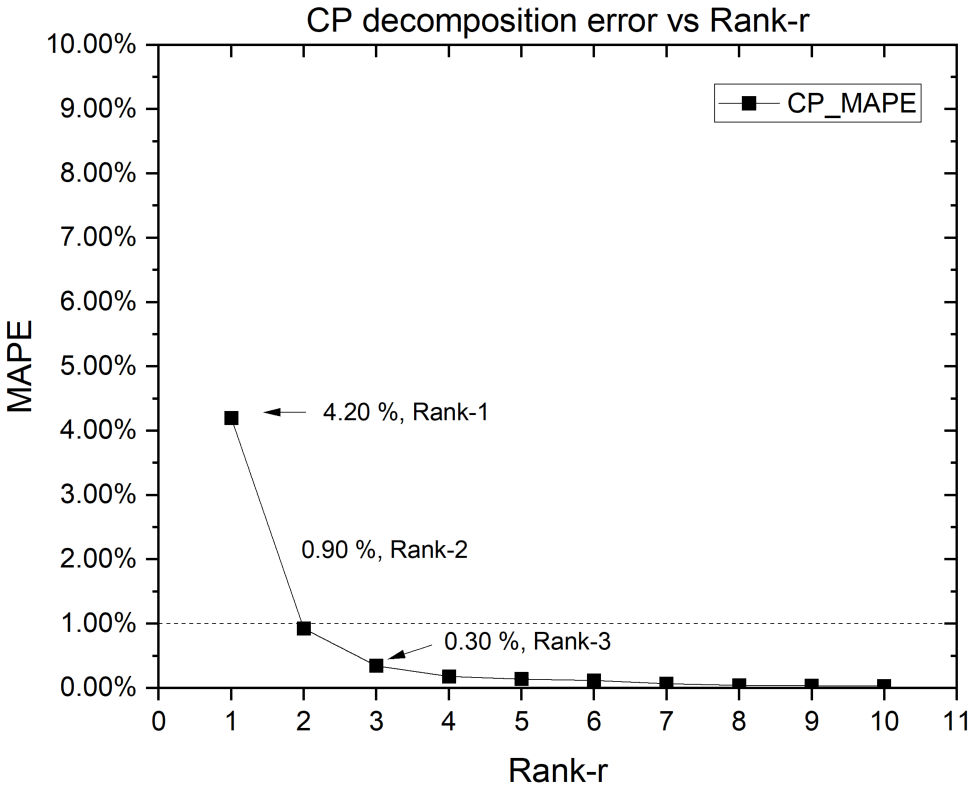
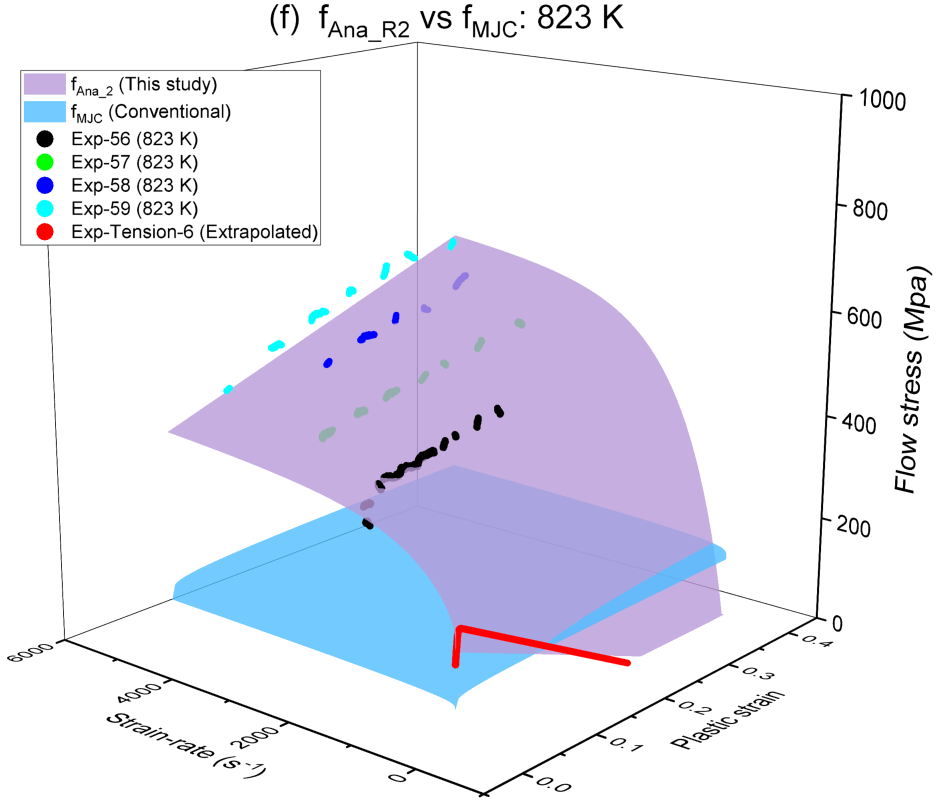

Paper 2 built a discrete-plus-analytical flow stress equation for a C54400 phosphor copper alloy from strain and strain-rate alone, qualified split Hopkinson pressure bar (SHPB) data reconstructed by an artificial neural network (ANN), then decomposed by singular value decomposition (SVD) into a rank-1 sum. Paper 3 adds the third variable that any real dynamic loading problem eventually needs: temperature. The same material is now tested from 293 K to 823 K, the ANN is widened to three inputs, and the resulting order-three flow stress array is decomposed by CANDECOMP/PARAFAC (CP) decomposition instead of SVD. The paper then does something the earlier two papers did not: it builds a conventional, Johnson-Cook-type equation from the same data using the standard calibration procedure, and compares it head-to-head against the CP-based equation at all six tested temperatures. The comparison is not close. This guide walks through why.
Keywords: dynamic flow stress; split Hopkinson pressure bar (SHPB); artificial neural network (ANN); CANDECOMP/PARAFAC (CP); strain-rate effect; thermal effect
1. The question this paper asks
A general dynamic flow stress is a function of strain, strain-rate and temperature together, \(\sigma = f(\varepsilon,\dot\varepsilon,T)\). Almost every equation used in practice, Johnson-Cook (J-C) included, instead assumes a decoupled, multiplicative structure, one term per variable, calibrated from separate simple tests and multiplied together. Paper 1 showed that this decoupling assumption is not automatically legitimate and gave a rank-based way to check it; Paper 2 then built, for strain and strain-rate only, a data-driven alternative that does not need the assumption at all, an ANN reconstructs the qualified SHPB data into a dense array, and a low-rank decomposition of that array gives both a discrete flow stress representation and, when each mode is curve-fitted, an analytical equation.
Paper 3 asks whether the same two-step recipe, ANN reconstruction followed by low-rank decomposition, still works once temperature is added as a third variable, and, separately, whether the resulting equation is actually better than what the conventional J-C-style procedure would produce from the same experimental data. Both questions matter because temperature is exactly where multiplicative flow stress equations are known to struggle: thermal softening can make flow stress fall as strain increases, a non-monotonic behaviour that a single temperature-only multiplicative term is not built to represent.
2. From two variables to three
The experimental programme mirrors Paper 2's data-qualification approach (stress-equilibrium and non-unloading criteria) but now spans six temperatures, 293, 373, 523, 673, 748 and 823 K, combining quasi-static tension tests with SHPB tests at four impact-velocity groups (around 14, 20, 25 and 28 m/s). At the two highest temperatures, a phase-change-driven drop in the material's maximum tensile strain limits how far the quasi-static curves can be measured directly, so they are extended by Ludwick-equation extrapolation up to 673 K and by linear extrapolation at 748 and 823 K.
The ANN itself is widened from Paper 2's two inputs to three, normalised strain, strain-rate and temperature, mapping to one flow stress output. After comparing one- and two-hidden-layer networks of different widths, a two-hidden-layer network with four neurons per layer, denoted Network_H(4,4), is selected as the best trade-off between accuracy and overfitting, reaching a training MAPE of 4.49%. Critically, Network_H(4,4) reproduces the thermal-softening dips seen in the 748 K and 823 K data, regions where flow stress decreases with increasing plastic strain, which the paper notes is exactly where the standard return-mapping algorithm used in finite-element plasticity does not apply.
Once trained, Network_H(4,4) is used to densely fill an order-three array of flow stress values over plastic strain, strain-rate and temperature, the direct three-variable analogue of the finely-filled 2D array used in Paper 2. That array is the raw material for the decomposition step.
3. CP decomposition: how many terms does temperature need?
For two variables, a decoupled equation is a rank-1 matrix and SVD gives the best rank-\(r\) approximation. For three variables, the equivalent statement is that a decoupled equation is a rank-1 three-way tensor, and CP decomposition generalises the same idea: an order-three array \(\mathcal{X}\) is approximated as a weighted sum of \(r\) rank-1 terms, each a strain-mode vector, a strain-rate-mode vector and a temperature-mode vector combined by an outer product:
exactly as in the 2D case, each rank-1 term of Eq. (1) is a decoupled, multiplicative representation of the flow stress; keeping more terms lets coupling between variables be represented without abandoning the same underlying decomposition machinery. Approximation quality at each rank is again read off the mean absolute percentage error against the ANN-filled array:

Rank-1 alone is usable, but the paper carries both Rank-1 and Rank-2 forward as discrete flow stress representations (Eq. (8) in the original paper), each mode fitted with a simple curve so that the discrete decomposition becomes a closed-form equation.
4. Two analytical equations, Rank-1 and Rank-2
Curve-fitting the three modes of the CP Rank-1 decomposition gives an analytical flow stress equation, \(f_{Ana\_R1}\), with a Ludwick-type strain-hardening term, a Cowper-Symonds-type strain-rate term, and a second-order polynomial temperature term, multiplied together:
against the ANN-filled array, \(f_{Ana\_R1}\) has an overall MAPE of 6.59% using eight material parameters. It reproduces the material's behaviour well in the training region except in the thermal-softening-dominated regions at low strain-rate, where the paper notes the softening feature is simply lost by a Rank-1 (single-term, fully multiplicative) representation, exactly the kind of coupling a decoupled equation cannot capture.
Repeating the fit for the CP Rank-2 decomposition, a sum of two such multiplicative terms, gives \(f_{Ana\_R2}\), with an overall MAPE of 1.46% (98.54% accuracy) using fifteen material parameters. Unlike \(f_{Ana\_R1}\), the two-term \(f_{Ana\_R2}\) also performs well in the thermal-softening regions, gaining the extra flexibility needed to represent non-monotonic temperature behaviour at the cost of roughly twice the parameters.
5. The conventional method and its three uncertainties
To give the CP-based equations a genuine baseline, Paper 3 also builds a conventional flow stress equation, \(f_{MJC}\), modified from the widely used J-C form, from the same qualified dataset. The conventional procedure calibrates a strain-hardening term from a quasi-static test, a dynamic increase factor (DIF) from SHPB tests at a few chosen plastic strains, and a temperature factor (TF), here an order-three polynomial fitted from tests at those same chosen strains, then multiplies the three together. \(f_{MJC}\) needs only nine material parameters, fewer than either CP-based equation.
The paper identifies three uncertainties baked into that procedure: the predefined empirical equation used for each term may not actually fit the data well; the DIF obtained depends on which plastic strains were chosen for calibration; and the TF obtained likewise depends on which plastic strains were chosen. Because different chosen strains give different DIF and TF curves, “the accuracy of \(f_{MJC}\) is questionable.”
It also draws out three structural differences from the CP-based equations. First, the CP Rank-1 terms are fitted from the full CP Rank-1 discrete result across the whole strain range, while \(f_{MJC}\)'s terms are calibrated at a handful of specified plastic strains, so “using other plastic strains will lead to different [DIF] and [TF].” Second, the CP equation's multiplicative form falls directly out of the decomposition mathematics, while \(f_{MJC}\)'s multiplicative form “is presumed based on experience.” Third, the CP equations are fitted using the full qualified dataset, while \(f_{MJC}\) is calibrated from “only a small portion of the data.”
6. Head-to-head: where the conventional equation fails
Comparing \(f_{Ana\_R1}\) against \(f_{MJC}\) at all six temperatures, both reproduce the quasi-static behaviour reasonably well below 673 K, and both fail once temperature climbs into the phase-change region. But at high strain-rate, the two diverge: the dynamic behaviour is well characterised by \(f_{Ana\_R1}\), while \(f_{MJC}\) mostly fails, confirming that the conventional procedure's single-point DIF calibration does not generalise across the full strain-rate range the way the CP-derived rate term does.
The sharper comparison is \(f_{Ana\_R2}\) against \(f_{MJC}\) at all six temperatures, shown in Fig. 23. \(f_{Ana\_R2}\) performs well across the full temperature range; \(f_{MJC}\) does not. The clearest single panel is 823 K, the highest temperature tested and deepest into the thermal-softening regime:

The advantage of \(f_{MJC}\) over \(f_{Ana\_R2}\) is that the former needs only nine material parameters against fifteen; “however, [\(f_{Ana\_R2}\)] is more accurate than [\(f_{MJC}\)].” Stated in the paper's own words, from its conclusions: “the flow stress equation obtained by following the conventional method totally fails at high temperatures. There are many uncertainties in the application of the conventional method in the determination of the flow stress, which cause the low reliability and accuracy of the determined flow stress equation.”
7. Takeaway
Paper 3 extends the ANN-plus-low-rank-decomposition framework from Paper 2's two variables (strain, strain-rate) to three (adding temperature), using CP decomposition in place of SVD. The CP Rank-2 analytical equation reaches 98.54% accuracy and, unlike its Rank-1 counterpart, reproduces the material's thermal-softening behaviour across all six tested temperatures. Built from the same experimental data, a conventional Johnson-Cook-type equation carries three identifiable calibration uncertainties, tied to which plastic strains its DIF and TF terms happen to be evaluated at, and this shows up directly in its performance: it totally fails at high temperature where the CP-based equation does not. The trade-off is transparent, not free: the conventional equation needs fewer material parameters, the CP Rank-2 equation needs more accuracy, and the paper's evidence is that, for this material and temperature range, accuracy is what actually breaks down first.
References
- Huang, X., & Li, Q. M. (2025). Determination of dynamic flow stress equation based on discrete experimental data: Part 2 — Dynamic flow stress depending on strain, strain-rate and temperature. International Journal of Impact Engineering, 206, 105432. https://doi.org/10.1016/j.ijimpeng.2025.105432
- Huang, X., & Li, Q. M. (2023). The legitimacy of decoupled dynamic flow stress equations and their representation based on discrete experimental data. International Journal of Impact Engineering, 173, 104453. https://doi.org/10.1016/j.ijimpeng.2022.104453
- Huang, X., & Li, Q. M. (2025). Determination of dynamic flow stress equation based on discrete experimental data: Part 1 — Methodology and the dependence of dynamic flow stress on strain-rate. International Journal of Impact Engineering, 206, 105403. https://doi.org/10.1016/j.ijimpeng.2025.105403
- Johnson, G. R., & Cook, W. H. (1983). A constitutive model and data for metals subjected to large strains, high strain rates and high temperatures. In Proceedings of the 7th International Symposium on Ballistics, The Netherlands.
For the decomposition mathematics behind Section 3, see the CP decomposition note (the ALS algorithm, tensor rank and uniqueness); for the two-variable, SVD-based version of the same idea, see the reading guide to Paper 2.